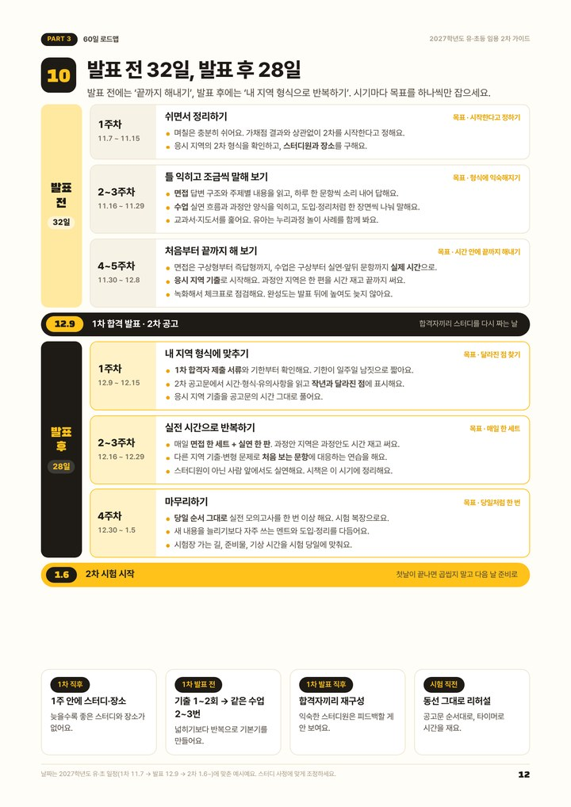
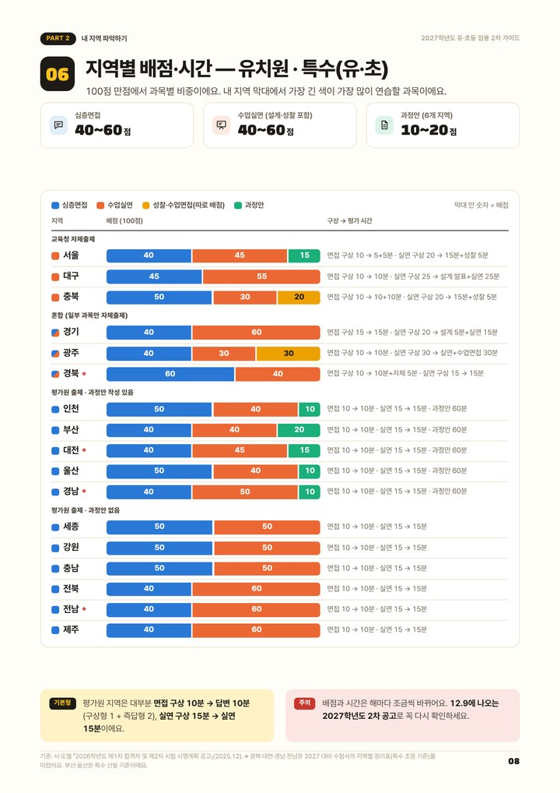
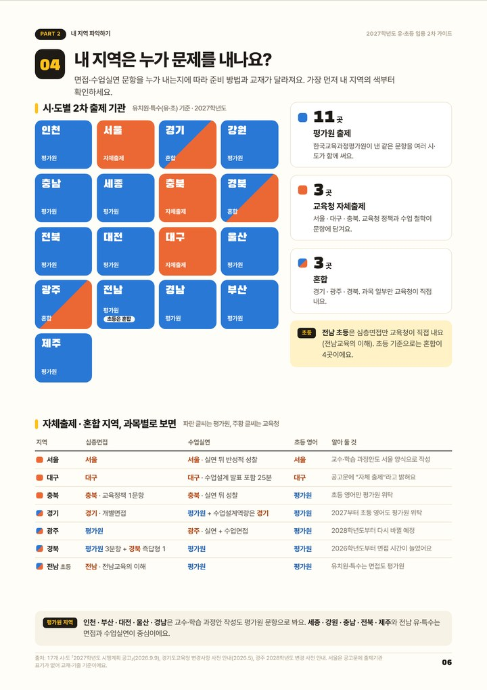
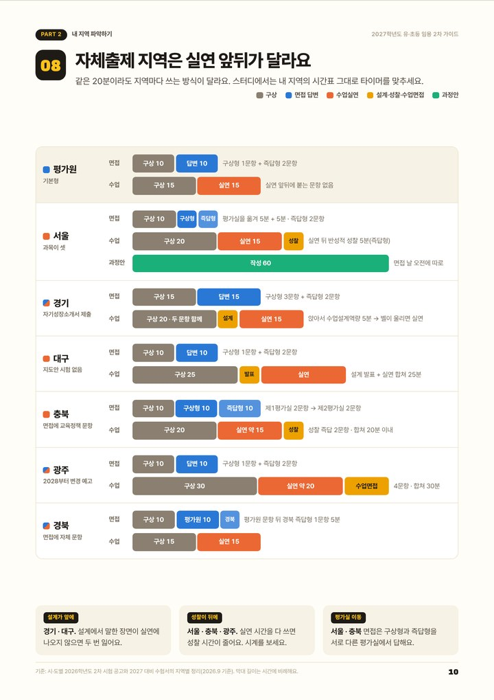
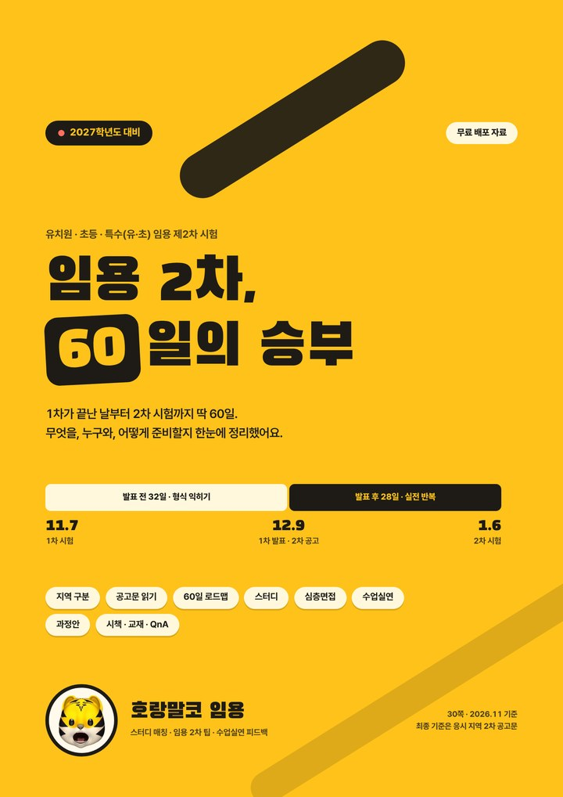
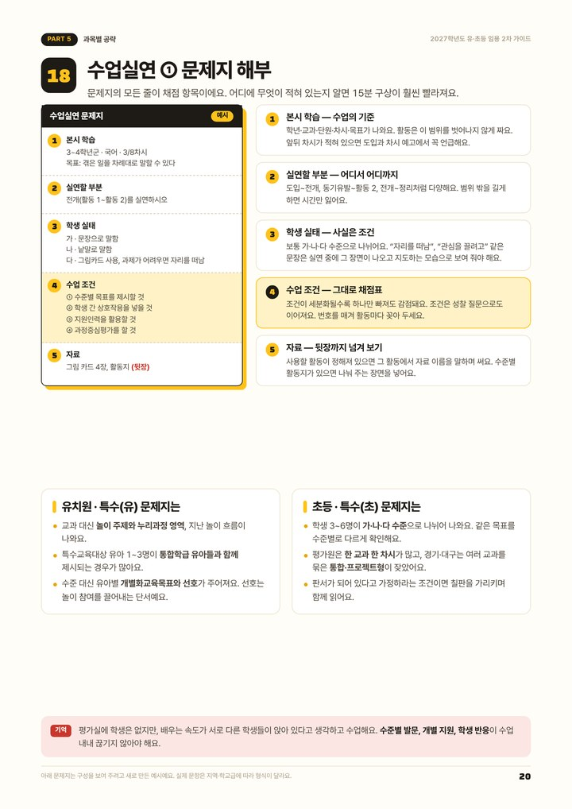
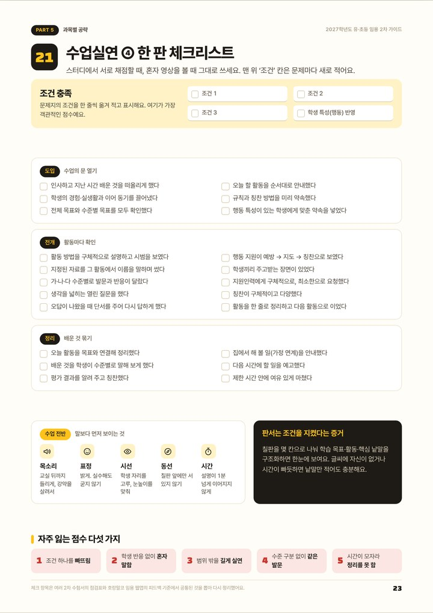

무료 자료 · 30쪽
임용 1차 끝났다면,2차까지 딱 일
 호랑말코 임용
호랑말코 임용
1차 시험11.7토요일
1차 발표12.9수요일
2차 시험1.6수요일
“발표 나고 시작하면 늦을까요?”
1차 시험부터 2차 시험까지 60일.
그중 발표 뒤에 남는 시간은 28일뿐이에요.
면접, 수업실연, 과정안까지
처음부터 익히기엔 빠듯한 시간이죠.
그래서 2차의 큰 그림을 30쪽에 정리했어요.
호랑말코 임용
Q2차까지 얼마나 남았나요?
11.71차 시험
12.91차 발표 · 2차 공고
1.62차 시험
일1차 시험에서
2차 시험까지
일결과를 모르는 채
보내는 시간
일발표를 기다리면
남는 시간
좋은 스터디와 장소는 1차 직후 1주 안에 차요.
합격생들은 발표 전부터 스터디를 돌렸어요.
일정: 17개 시·도교육청 2027학년도 시행계획 공고(2026.9.9)
Q내 지역은 누가 문제를 내나요?
누가 내느냐에 따라 교재도, 스터디도 달라져요.
유치원·특수(유·초) 기준 · 17개 시·도 2027학년도 시행계획 공고
Q같은 수업실연인데 왜 달라요?
구상수업실연설계 · 성찰 · 수업면접
설계는 실연 전에, 성찰은 실연 후에 붙어요.
스터디 타이머는 내 지역 시간표 그대로.
작년(2026학년도) 2차 공고 기준 · 단위는 분
Q60일 동안 뭘 해야 하나요?
11주차쉬면서 스터디·장소 구하기
22~3주차틀 익히고 조금씩 말해 보기
34~5주차실제 시간으로 끝까지 해 보기
12.91차 발표 · 2차 공고
4발표 후 1주내 지역 형식에 맞추기
52~3주매일 면접 한 세트 + 실연 한 판
6마지막 주당일 순서 그대로 리허설
발표 전 목표는 완성도가 아니라
‘시간 안에 끝까지 해내기’예요.
Q스터디, 숫자로 말하면?
3~4명스터디 인원
응시 1 · 평가 2 · 시간 담당 1
시간한 명이 한 바퀴
4명이면 하루 4시간 안팎
회 이상시험 전까지 실연
횟수보다 총량이 실력이에요
번 이상낯선 사람 앞에서
우리끼리는 같은 실수를 못 봐요
피드백은 감상이 아니라 채점이에요.
잘한 점 1개 → 고칠 점 2개 → 다시 해 보기
Q어디서 점수를 잃나요?
연습 때 가장 자주 나오는 감점 네 가지예요.
면접은 가짓수 · 근거 · 구체성,
수업실연은 조건 · 수준별 지원 · 시간.
가이드에 체크리스트로 담았어요.
30쪽에 이런 걸 담았어요
지역 구분 지도
지역별 배점·시간
자체출제 지역 흐름
60일 로드맵

수업실연 문제지 해부

한 판 체크리스트
공고문 8가지스터디 운영면접 답변과정안시책QnA
27학년도 유·초등 임용 2차 가이드60일, 혼자 헤매지 마세요
프로필 링크에서 바로 받을 수 있어요